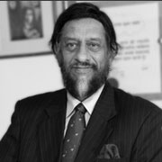

international selection committee
-

George Smoot
Professor, UC Berkeley, Nobel Laureate in Physics (2006)
-
Yuriko Koike
Member, the House of Representatives, Former Minister of the Environment, Former Minister of Defense, Japan
-
Bernard Bigot
Director General, ITER
-
Shigeo Katsu
President, Nazarbayev University
-

Rajendra K Pachauri
Ex-Chairman, IPCC, Director General, TERI
-
Albert Binger
Energy Science Advisor, Caribbean Community Climate Change Centre SIDS DOCK Coordinator
-
Ramamoorthy Ramesh
Purnendu Chatterjee Endowed Chair in Energy Technologies, Associate Laboratory Director for Energy Technologies at the Lawrence Berkeley National Laboratory
-
Akhmetzhan Yessimov
Chairman of the Board, Astana EXPO-2017
-

Maria van der Hoeven
Senior Associate Fellow, Clingendael International Energy Programme Executive Director (2011-2015), International Energy Agency (IEA)
-
Friedbert Pfuluger
Director, European Center for Energy and Resource Security, King’s College London
-
Charles Feinstein
Director, Energy and Extractives Global Practice, World Bank
-
Vicente Loscertales
Secretary General, BIE ISC Chairman